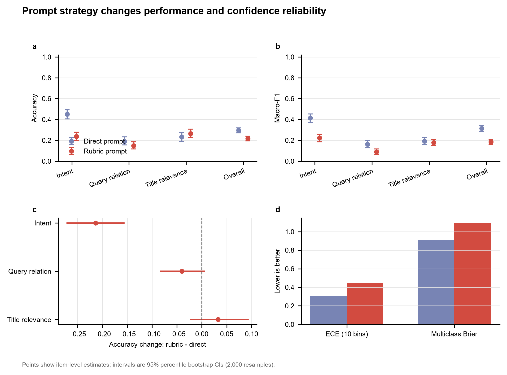
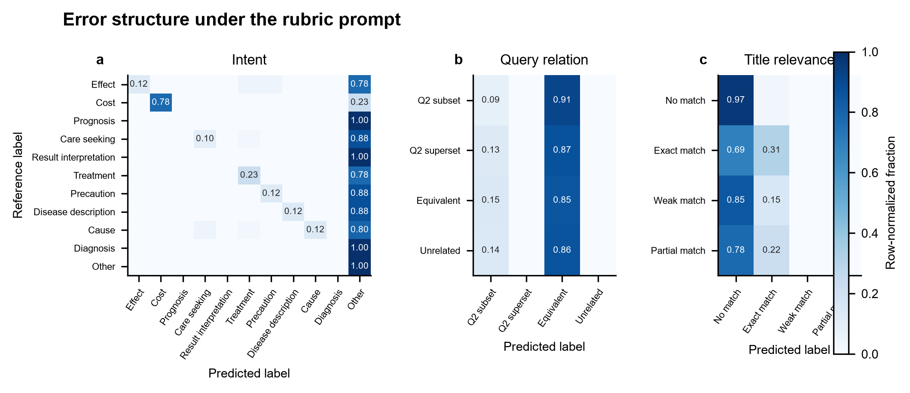
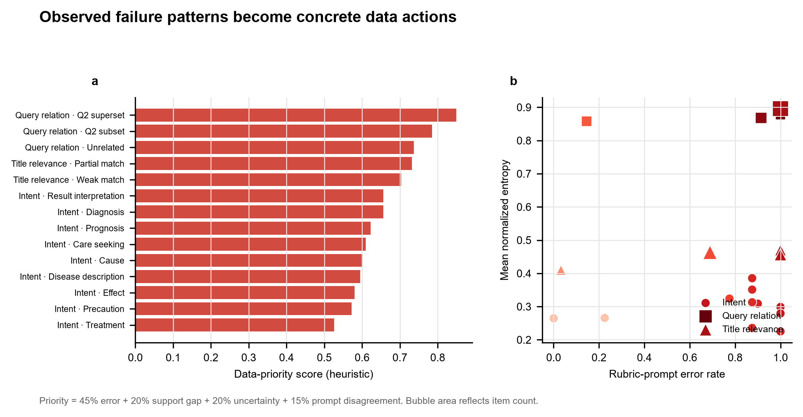

性能之外，还要看可靠性
同一条目分别使用直接提示与规则增强提示。Accuracy 和 Macro-F1 衡量判分；ECE 与 Brier 分数衡量置信度是否可信。

点估计以评测条目为独立单位；误差线为 2,000 次 percentile bootstrap 的 95% CI。
| 任务 | n | Accuracy 变化 | 95% CI | BH-adjusted p | 不一致条目 |
|---|---|---|---|---|---|
| KUAKE-QIC | 440 | -0.214 | [-0.270, -0.157] | 2.723e-12 | 178 |
| KUAKE-QQR | 400 | -0.040 | [-0.083, +0.005] | 0.1578 | 86 |
| KUAKE-QTR | 400 | +0.033 | [-0.022, +0.092] | 0.3017 | 135 |
总分会隐藏具体混淆
按参考标签归一化的混淆矩阵显示哪些能力边界最容易出错；这是设计困难负例和标注规范的起点。

每一行加总为 1。图中展示规则增强提示的任务内错误结构。
把错误转成下一批数据任务
优先级不是拍脑袋排序，而是显式组合错误压力、低频支持、模型不确定性和提示不一致率。

优先级公式：45% 错误率 + 20% 支持缺口 + 20% 归一化熵 + 15% 提示不一致率。
| 优先级 | 任务 | 标签 | n | 准确率 | 提示不一致 | 分数 | 建议动作 |
|---|---|---|---|---|---|---|---|
| P0-priority | KUAKE-QQR | 后者是前者的语义父集 | 62 | 0.0% | 58.1% | 0.849 | 补齐低频类别样本，并按场景来源做分层采样 |
| P0-priority | KUAKE-QQR | 后者是前者的语义子集 | 82 | 8.5% | 56.1% | 0.785 | 补齐低频类别样本，并按场景来源做分层采样 |
| P0-priority | KUAKE-QQR | 语义无直接关联 | 194 | 0.0% | 71.6% | 0.737 | 增加边界对比样本，统一标签定义与标注指南 |
| P0-priority | KUAKE-QTR | 部分匹配 | 85 | 0.0% | 68.2% | 0.731 | 优先复核标签规范，补充高置信反例与专家判例 |
| P0-priority | KUAKE-QTR | 很少匹配有一些参考价值 | 105 | 0.0% | 69.5% | 0.704 | 优先复核标签规范，补充高置信反例与专家判例 |
| P0-priority | KUAKE-QIC | 指标解读 | 40 | 0.0% | 97.5% | 0.656 | 优先复核标签规范，补充高置信反例与专家判例 |
| P0-priority | KUAKE-QIC | 病情诊断 | 40 | 0.0% | 100.0% | 0.656 | 优先复核标签规范，补充高置信反例与专家判例 |
| P0-priority | KUAKE-QIC | 后果表述 | 40 | 0.0% | 85.0% | 0.623 | 优先复核标签规范，补充高置信反例与专家判例 |
| P0-priority | KUAKE-QIC | 就医建议 | 40 | 10.0% | 95.0% | 0.609 | 优先复核标签规范，补充高置信反例与专家判例 |
| P0-priority | KUAKE-QIC | 病因分析 | 40 | 12.5% | 87.5% | 0.602 | 优先复核标签规范，补充高置信反例与专家判例 |
| P0-priority | KUAKE-QIC | 疾病描述 | 40 | 12.5% | 87.5% | 0.595 | 优先复核标签规范，补充高置信反例与专家判例 |
| P0-priority | KUAKE-QIC | 功效作用 | 40 | 12.5% | 82.5% | 0.580 | 优先复核标签规范，补充高置信反例与专家判例 |
每一步都能被重新运行
公开仓库包含下载、哈希验证、模型推理、统计分析、绘图、网页构建和发布核验脚本。
数据审计
固定源文件哈希，检查行数、标签合法性、重复、长度、类别失衡和有限的隐私模式。
受约束推理
对每个允许标签计算条件似然，避免自由生成格式错误，保留可复现的选择概率。
配对统计
同条目配对，报告 item-bootstrap 置信区间、McNemar 精确检验和多重比较校正。
错误切片
按任务和标签定位高错误、高不确定性、高置信错误与提示敏感样本。
数据策略
输出 P0/P1/P2 优先级、建议数据类型和可复核的计算字段。
发布检查
测试文件一致性、禁止原始文本进入 Git，并验证图表、指标与网页交付物。
这不是临床能力证明
三项任务评估医疗搜索意图和相关性，不评估诊断、治疗或真实健康咨询安全。公开 benchmark 可能进入模型训练数据；结果只适用于当前模型 revision、数据子集、提示和评分协议。
数据来源：PromptCBLUE / CBLUE。模型：Qwen3-0.6B。完整定义、限制和引用见公开仓库的 Evaluation Card 与 Data README。